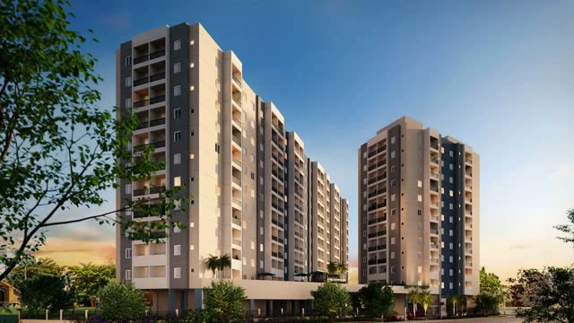
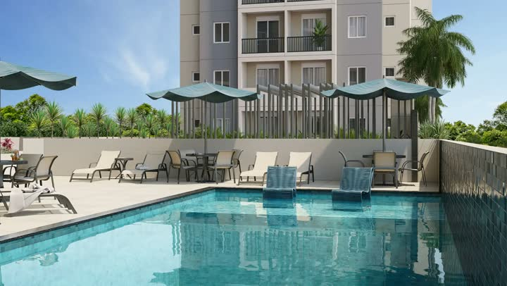
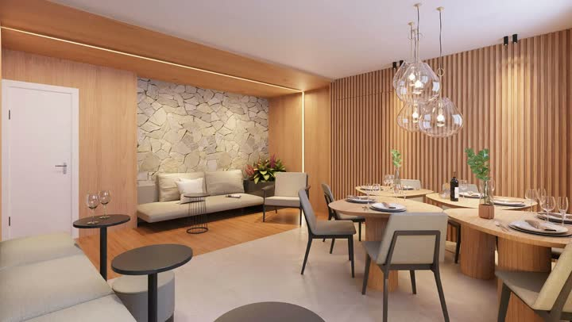
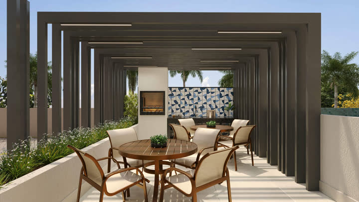
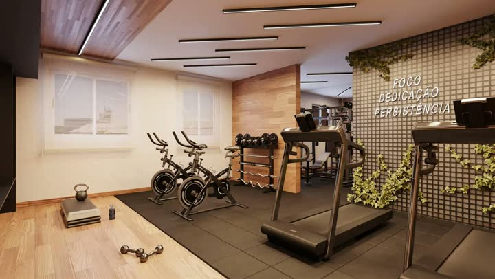
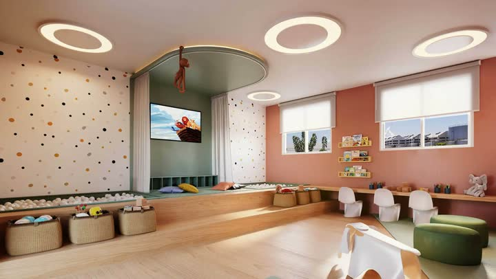

Fale com a Crisla e receba a simulação
Me conta sua renda e o que você paga de aluguel hoje: eu te mostro se o Gentileza BeOn Porto Residencial cabe no seu bolso, com os números do seu caso.
Simular agoraPara quem mora sozinho ou a dois e quer praticidade: varanda, lazer completo e transporte por perto, entre o Porto Maravilha, a Quinta da Boa Vista e o futuro Terminal Gentileza.
Indicado para renda familiar a partir de R$ 6,5 mil.
*Disponibilidade e valores sujeitos a alteração conforme velocidade de vendas. Confirme sempre com a corretora.
Opções de planta: 2 quartos | 38m² · 2 quartos | 37m² · 2 quartos | 36m² · 1 quarto | 33m² · 1 quarto | 32m².






Imagens meramente ilustrativas.
2min
2min
3min
3min
3min
3min
4min
5min
Distâncias e tempos informados pela incorporadora. Rua Monsenhor Manuel Gomes, 175, São Cristóvão, Rio de Janeiro.
Me conta sua renda e o que você paga de aluguel hoje: eu te mostro se o Gentileza BeOn Porto Residencial cabe no seu bolso, com os números do seu caso.
Simular agoraRua Monsenhor Manuel Gomes, 175, São Cristóvão, Rio de Janeiro.
O empreendimento está em obras avançadas. A Crisla confirma o andamento da obra e a previsão de entrega atualizada.
Apartamentos de 1 e 2 quartos. As plantas têm de 32 a 38 m²; a Crisla envia todas as plantas e metragens disponíveis.
Os valores e as condições variam conforme a unidade e a forma de pagamento. Chame a Crisla no WhatsApp para receber a tabela atualizada e uma simulação sem custo.
A Crisla indica o BeOn Porto para renda familiar a partir de R$ 6,5 mil. Ela faz a simulação gratuita com os números do seu caso.
Na Black Riva de novembro/2026, as unidades promocionais de 1 quarto saem por R$ 269.990 e as de 2 quartos por R$ 347.990, com documentação grátis. São 10 unidades, válidas para compras fechadas em novembro.